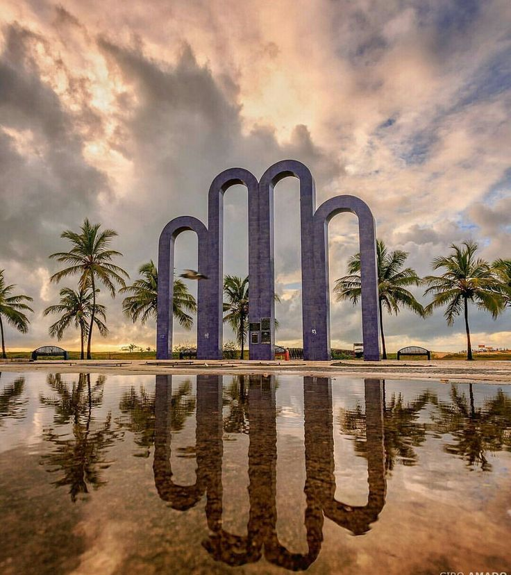

SERGIPE
ARACAJU
1st IEEE CASS SERGIPE WORKSHOP



1st IEEE CASS Northeast Brazil Workshop on Circuits and Systems
We are pleased to announce the inaugural IEEE Circuits and Systems Society (CASS) Workshop in Brazil's Northeast region, to be held in Aracaju, Sergipe. This landmark event aims to foster academic and industrial exchange among local and international researchers, strengthening the circuits and systems community in the region.
Over two days, the workshop will feature a diverse program, including keynote lectures by distinguished experts from leading institutions in the field, hands-on workshops, and poster sessions.This event presents a unique opportunity for students, researchers, and industry professionals to connect, share knowledge, and explore future collaborations. The hosting of this workshop in the Northeast underscores IEEE CASS's commitment to expanding its global presence and supporting regional development in circuits and systems.
Click on a speaker to navigate to their section.
The development of tools to aid the design of integrated circuits must deal with various optimization problems with multiple cost functions.
With the increase in the scale of integration of integrated circuits, new methodologies, algorithms, and data structures are needed to assist the synthesis flow of integrated circuits.
In recent years, there has been an increase in the search for solutions combining machine learning techniques.
In this talk, we will discuss the main synthesis flow tools, their optimization objectives, the dependence on graph-based data structures, the main contemporary challenges, and how machine learning techniques can be applied to help the integrated circuit synthesis flow achieve lower cost solutions and reduce design time.
The challenges of integrating Machine Learning and trends in the field will also be highlighted.
She has a degree in Computer Engineering from the Federal University of Rio Grande (2003), a master's degree (2006) and a PhD (2014) in Computer Science (PPGC) from the Federal University of Rio Grande do Sul. She was a visiting researcher at the Politecnico di Torino (2007) and a professor at the Federal University of Rio Grande (FURG) from 2009 to 2018.
Since 2018, she has been a professor at the Federal University of Santa Catarina (UFSC), working on undergraduate courses in Computer Science, Information Systems and Electronic Engineering, and on the master's and doctoral degrees of the postgraduate program in computing (PPGCC).
She has been researching in the areas of EDA tool development, integrated circuit design with a focus on energy efficiency, fault tolerance and robustness of digital circuits. She is the author of more than 100 scientific articles in international journals and conferences, a book and two book chapters.
She was vice-coordinator of the Graduate Program in Computing (PPGComp) at FURG (2017-2018), and financial coordinator of the IEEE Council on Electronic Design Automation (CEDA - South Brazil) from 2018 to 2021. She is a Senior Member of the IEEE, a CNPq CA-ME research productivity grant holder since 2018, and vice-coordinator of the Special Commission for the Design of Integrated Circuits and Systems (CE-CCI) of the Brazilian Computer Society (SBC).
The design of contemporary VLSI circuits (chips), made up of dozens of general-purpose processors and dedicated processors, and with billions of transistors, requires the use of strict methodologies, based on the intensive use of EDA (Electronic Design Automation) tools.
These tools, in turn, form a design flow that generally takes a top-down approach, starting with the description of system-level behavior, followed by architectural design, functional design, logic synthesis, technology mapping, and ending with physical design.
Each of these stages receives a description at a given level of abstraction and automatically produces a new system description by adding functional and/or structural details, so that the final description can be used to manufacture the chip.
In addition, the description generated at each stage also needs to be validated using verification techniques before moving on in the design flow.
This course will cover the types of description used and the synthesis and verification processes carried out at each stage, as well as the associated EDA tools.
The challenges of developing EDA tools for chip design in current and future technologies will also be addressed.
José Luís Güntzel is a Full Professor in the Department of Informatics and Statistics (INE) at the Technology Center (CTC) of the Federal University of Santa Catarina (UFSC). He is supervisor of the Interdepartmental Microelectronics Center (NIME) at UFSC and a member of the Embedded Computing Laboratory (ECL) at UFSC. He has a degree in Electrical Engineering (1990), a master's degree (1993) and a doctorate (2000) in Computer Science from the Federal University of Rio Grande do Sul (UFRGS). In 1996, he completed a doctoral internship at the Laboratoire d'Informatique, de Robotique et de Micro-électronique de Montpellier (LIRMM), Université Montpellier 2, Montpellier, France. Between 2017 and 2019 he was coordinator of the Graduate Program in Computer Science (PPGCC) at UFSC. Between 2002 and 2007, he was an adjunct professor in the Department of Computer Science at the Federal University of Pelotas (UFPel).
He is a senior member of the IEEE. He is a member of the IEEE Circuits and Systems Society, the IEEE Computer Society (CS), the IEEE Signal Processing Society (SPS), the IEEE Council for Electronic Design Automation (CEDA), the Brazilian Computer Society (SBC) and the Brazilian Microelectronics Society (SBMicro), of which he was a board member in 2006-2008. He is currently the coordinator of the IEEE Brazil CEDA Chapter, coordinator of the Executive Committee (Steering Committee) of the SBCCI (Symposium on Integrated Circuits and Systems Design) and a member of the Steering Committee of the Special Commission for the Design of Integrated Circuits and Systems of the SBC.
He has experience in the areas of Electrical Engineering and Computer Science, with an emphasis on Microelectronics, working mainly on the following subjects: Electronic Design Automation (placement & routing, gate sizing, clock tree synthesis, timing analysis etc), VLSI architectures for high-resolution video compression and the design of highly energy-efficient systems-on-chip (SoCs).
The talk will cover some trends in Computing and Microelectronics, such as processor architectures, energy-saving strategies, optimization, critical systems, automated design, fault tolerance, embedded systems, alternative architectures (such as quantum systems, systemic systems) and hardware accelerators. Special emphasis will be placed on strategic technologies for the Internet of Things.
The Internet of Things (IoT) demands new challenges in the design of computing and electronic devices. One of the main challenges is reducing energy consumption, which has grown enormously as a result of the increasing number of devices connected to the internet, most of which are permanently connected. An overview will be given of design strategies (from software to component level) to reduce energy consumption, as well as to increase the reliability of IoT components, such as reducing the number of components in IoT devices. Optimization is a key word in the design of IT components in the IoT era.
EDA (electronic design automation) tools have paved the way for the integration of billions of components into a single integrated circuit. However, many EDA tools still rely on text interfaces. The use of visualization tools helps not only to provide a visual output from an EDA tool, but also to show the tool's performance in terms of the quality of the results. Good graphical output is useful for improving algorithms or developing new ones. The talk is illustrated with several examples and animations, especially some logic cell positioning visualization tools. A perspective is provided on how these visualization tools have contributed to the improvement and development of new algorithms developed by our research team.
Ricardo Reis (M’81–SM’06) received the degree in electrical engineering from the Federal University of Rio Grande do Sul (UFRGS), Porto Alegre, Brazil, in 1978, the Ph.D. degree in informatics, option microelectronics from the Institut National Polytechnique de Grenoble, France, in 1983, and the Doctor Honoris Causa from the University of Montpellier, France, in 2016.
He has been a Full Professor with UFRGS since 1981. He is at research level 1A of the CNPq (Brazilian National Science Foundation), and the Head of several research projects. He has published over 550 papers in journals and conference proceedings and has authored or co-authored several books.
His current research interests include physical design, physical design automation, design methodologies, digital design, EDA, circuits tolerant to radiation, and microelectronics education.
He was a member of the CASS Distinguished Lecturer Program 2014–2015. He is a member of the IEEE CASS BoG (2018–2020). He was a recipient of the IEEE Circuits and Systems Society (CASS) Meritorious Service Award 2015.
He was the Vice President of the IEEE CASS representing Region 9 (Latin America) and the Brazilian Computer Society (SBC). He is the Chair of IFIP TC10. He has also organized several international conferences.
| Time | Monday, 07/28/2025 | Tuesday, 07/29/2025 |
|---|---|---|
| 10:00 ~ 12:00 |
Hands-on Tutorial OpenRoad Design Flow Lecturer specialist to be decided |
Hands-on Tutorial Automatic CMOS Layout and Spice Simulation Lecturer specialist to be decided |
| Lunch Time | ||
| 13:30 ~ 14:40 (Introductory lecture) |
Introdução à automação de projeto de Chips Jose Luis Guntzel - UFSC and IEEE Senior member |
Machine Learning aplicado no Projeto de Circuitos Integrados Cristina Meinhardt - UFSC and IEEE Senior member |
|
14:50 ~ 16:00 (Advanced Lecture) |
Ferramentas de Visualização Ricardo Reis - UFRGS and IEEE Life Senior member |
Tendências em Computação e Microeletrônica Ricardo Reis - UFRGS and IEEE Life Senior member |
|
16:10 ~ 17:00 Coffee break and Poster/Panel |
Poster Session | Presenting IEEE-CEDA and IEEE-CASS |
|
17:10 ~ 18:30 (Industrial Talks) |
Industrial Invited Talk Business and job opportunities |
Industrial Invited Talk Business and job opportunities |
THE PROGRAM WILL COVER THE FOLLOWING TOPICS IN CIRCUITS AND SYSTEMS, BUT WILL NOT BE LIMITED TO THEM:
Submit a poster highlighting your research in circuits and systems — engage with peers, exchange ideas, and gain insights from the community to strengthen your work! Selected authors will have the opportunity to exhibit their posters in the hall of the UFS rectorate, sharing their work and ideas with the Workshop audience and receiving valuable input and feedback. This is a great opportunity to expand your network and find new collaborators. Ongoing work is also welcome.
Posters must be submitted electronically using an A4 portrait layout (21 cm × 29.7 cm) in PDF format, along with a 500-word abstract. Both the abstract and the poster may be written in English or Portuguese, and the presentation may be given in Portuguese. The link to the submission system will be soon available here and below. After review by experts from the community, authors of selected works will present their posters in person during the event. Authors of accepted posters may submit a final version in A0 portrait layout (84.1 cm × 118.9 cm) by the camera-ready deadline so the organization can print and provide it free of charge. After this deadline, authors will be responsible for printing their own posters.
No poster or abstract will be registered online, so authors can share their work with the local community without compromising the originality requirements of future conference or journal submissions.
There is a mandatory template with predefined sections; authors may use the remaining space as they see fit.
Note 1: The poster template is available in both PowerPoint and PDF formats. The poster must be submitted in PDF format, and the abstract must be submitted in PDF format as well.
Note 2: It is necessary to register for the workshop as well. We highly recommend that all authors register to secure their participation, as only the spot for the first author of approved posters is guaranteed.
👉 Click here to access the poster template.
👉 Click here to download the PDF version of the poster template.
👉 [Comming SOON] Click here to submit your work.
Important dates:
📌 Submission deadline: June 30th, 2025
📌 Notification of acceptance: July 10th, 2025
📌 Camera ready: July 15th, 2025
The Microsoft CMT service was used for managing the peer-reviewing process for this conference. This service was provided for free by Microsoft and they bore all expenses, including costs for Azure cloud services as well as for software development and support.
The 1st IEEE CASS Northeast Brazil Workshop on Circuits and Systems will be held at the Auditorium of the Rectorate of the Universidade Federal de Sergipe (UFS), located in Aracaju, Sergipe, Brazil. Coffee Break confirmed at the Rectorate Hall!
Hotel MK Express Hotel Aracaju
Check Prices
Go to Location
Sandrin Praia Hotel
Check Prices
Go to Location
The pre-registration for the 11th IEEE Circuits and Systems Workshop is free for all interested participants. After pre-registration, detailed instructions for registration will be sent via email. Certificate submission will be available.
CLICK HERE TO PRE-REGISTERThe IEEE Circuits and Systems Society is the leading organization that promotes the advancement of the theory, analysis, computer-aided design and practical implementation of circuits, and the application of circuit theoretic techniques systems and signal processing.The Society brings engineers, researchers, scientists and others involved in circuits and systems applications access to the industry’s most essential technical information, networking opportunities, career development tools, and many other exclusive benefits. Members with similar technical interests engage in professional exchange through the Society’s more than 100 local chapters in the United States, Canada, Europe, the Middle East, Africa, Latin America, Asia, Australia, and the Pacific.
Membership includes Society Newsletter (electronic), IEEE Circuits and Systems Magazine (electronic and print), IEEE RFIC Virtual Journal (electronic), IEEE Circuits and Systems Society Digital Library, and Conference Digital Library (electronic).
Circuits and Systems Society membership covers one calendar year, beginning on 1 January and ending on 31 December. Professionals can join at any time during the calendar year and fees are prorated based on the month in which membership begins through the end of the calendar year. The cost of membership includes Society dues plus the specified amountbased on the region in which you reside. IEEE CASS membership dues are listed below from Brazilian people:
| Membership Type | Renewal Fee | New Membership Fee |
|---|---|---|
| IEEE Students | $16 | $7 |
| CASS Students | $14 | $0 |
Additionally, there will be a subsidized social event for IEEE/CASS members. More information will be provided soon.
As an IEEE Member, you can affiliate with the Council on Electronic Design Automation (CEDA) free of charge. More information can be obtained at https://ieee-cas.org/about/membership.
.png)
Liga Acadêmica de Hardware e Robótica

Departamento de Computação da UFS

Universidade Federal de Sergipe
Liga Acadêmica de Hardware e Robótica
Departamento de Computação da UFS

Circuits and Systems Society

Council on Electronic Design Automation
Institute of Electrical and Electronics Engineers
Council on Electronic Design Automation
Institute of Electrical and Electronics Engineers